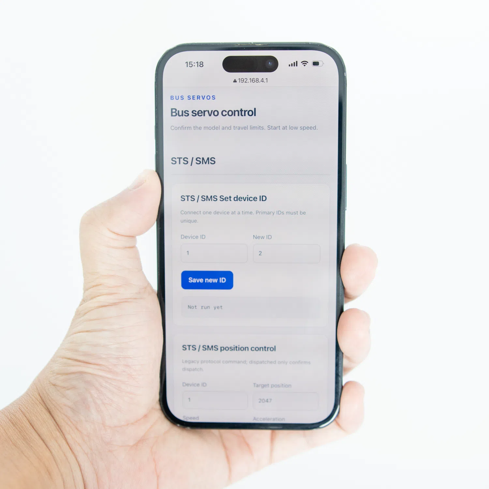
浏览器调试
扫描设备、读取反馈、设置参数，无需写代码。
ESP32-S3 · 通用机器人主控板
集成 TTL、RS485、CAN 接口、Wi-Fi 与六轴 IMU。上电后打开手机浏览器即可控制各类总线设备，也支持用户编写自定义程序控制机器人或连接上位机。
开源完整固件 · 中文 Wiki · 配套例程
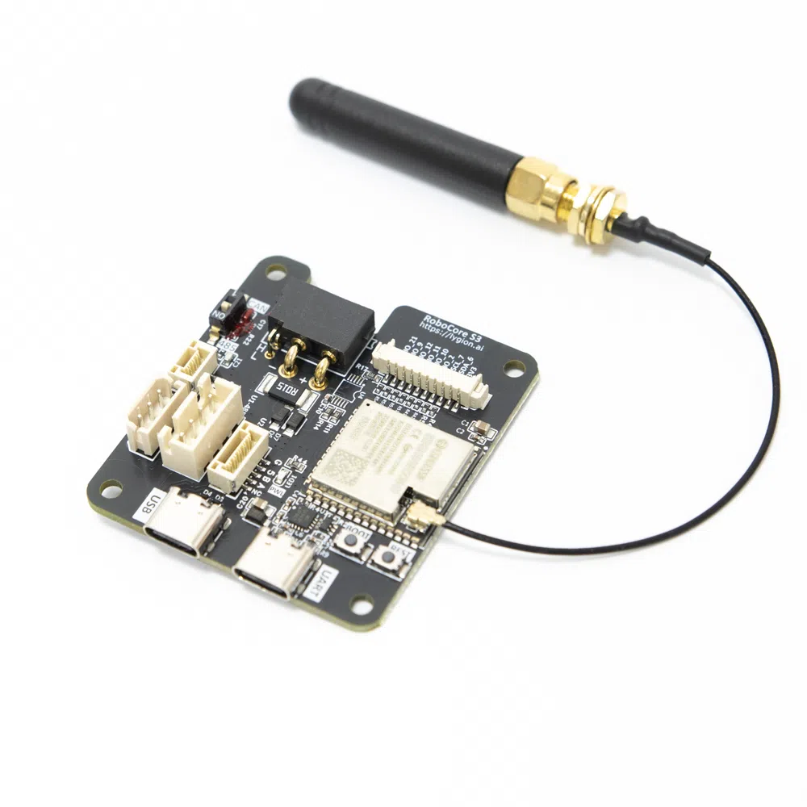
产品概览
适用于移动底盘、机械臂、云台等各类使用总线设备的机器人项目。
适用于高阶机器人的大小脑架构。简单任务也可由 RoboCore S3 主板独立运行。
接口与主要功能
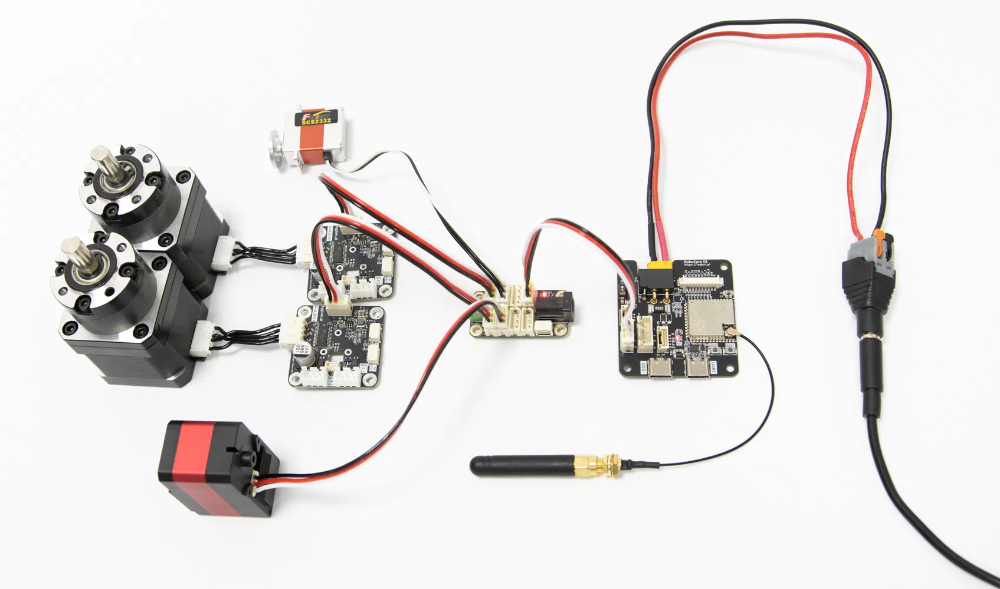
支持控制多种主流总线设备。当前例程覆盖 FEETECH（飞特） SCS、STS、SMS、HLS 舵机及灵影步进驱动器、TTL Node、E02 编码器、TTL IMU、PowerHub 等总线设备；其他设备可按协议开发。
QMI8658A 提供 3 轴加速度与 3 轴角速度实时数据反馈，支持网页姿态显示和 JSON 数据读取。
扩展自定义外设，或使用套装二的 UI 模块，实现显示、按键输入和声音提示。
UART 口用于下载调试，支持自动下载；原生 USB 口用于 USB CDC 通信。
快速上手
出厂内置 Web 应用。手机、平板、电脑均可使用，无需安装客户端。
插电、开机、RoboCore S3 上电后会自动建立热点。
默认热点名称 Robot，密码 12345678。
浏览器输入 192.168.4.1，切换中文，扫描 ID 并读取反馈。
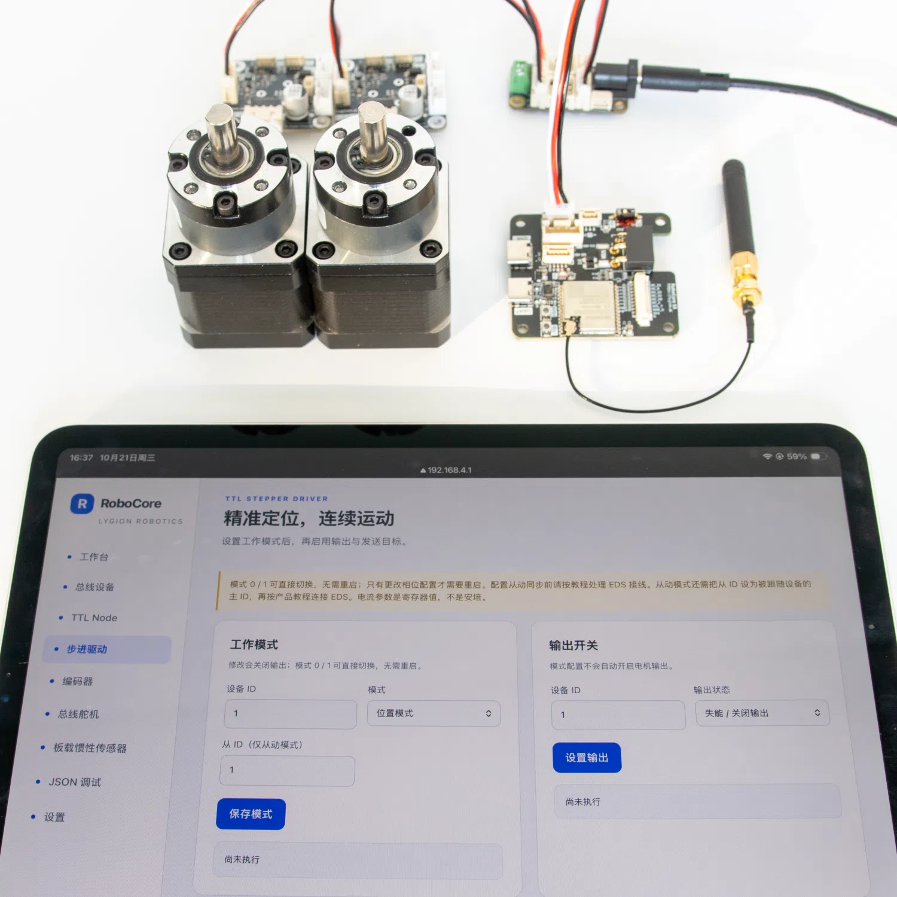
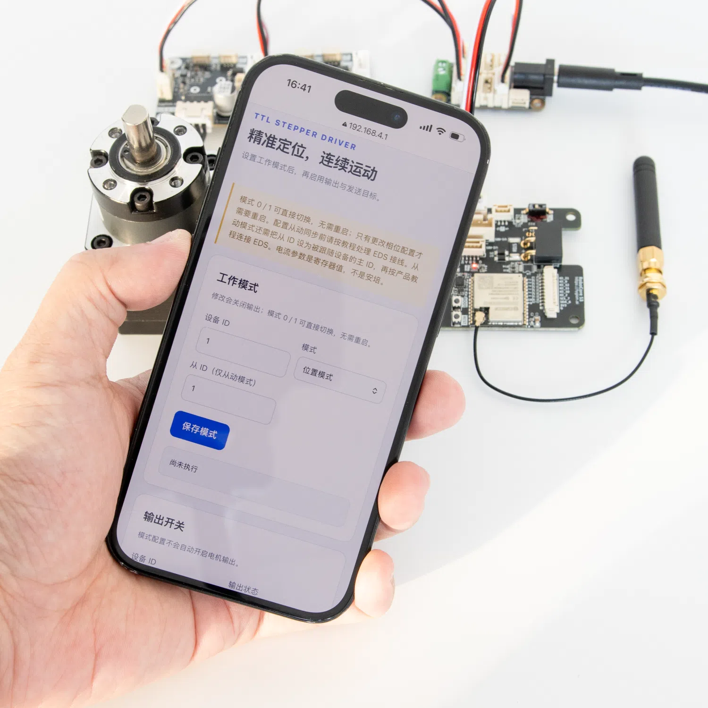
无线连接
适用于金属外壳机器人。随附天线支持 Ø6.2 mm 孔径穿板安装，用户也可选用其他 2.4GHz IPEX1 接口天线。
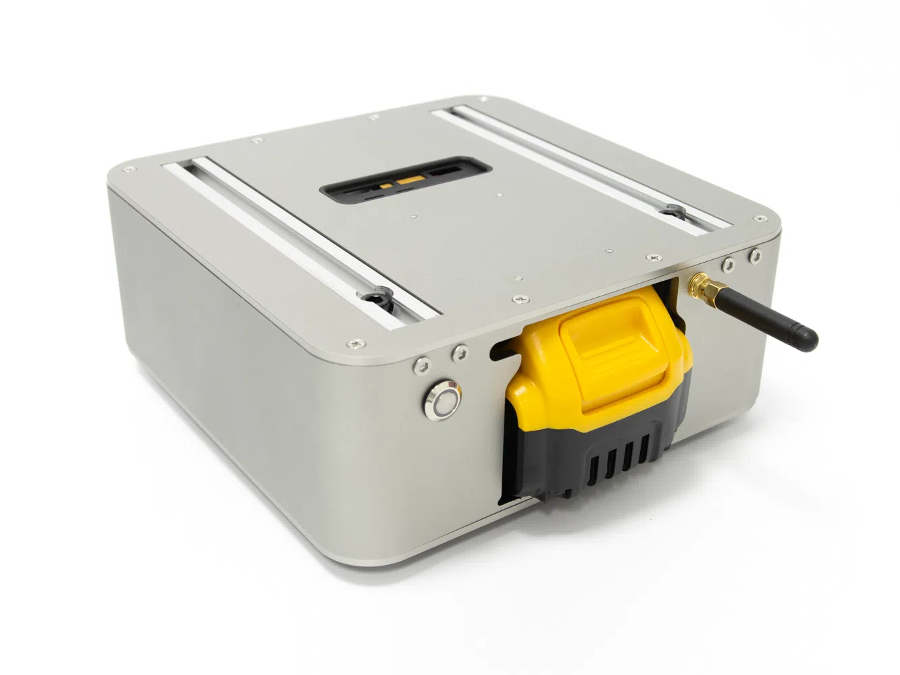
开发与集成
用户写程序控制总线设备时，可直接发送人类可读的 JSON 格式指令给 RoboCore S3，降低总线设备使用门槛。
ESP32-S3 原生 USB，连接 PC 或单板计算机。
适合脚本、参数配置等简单无线控制。
适用于高频指令传输的无线通信。
与附近 ESP32 设备通信，无需路由器。
扫描 ID 0–20 范围内的总线设备。
{"T":700,"first":0,"last":20}板载姿态传感器
内含 3轴加速度计 + 3轴陀螺仪，可实时检测机器人当前的姿态，上位机可通过 JSON 指令获取当前的 IMU 传感器读数。
六轴 IMU 的航向为相对值，会随时间漂移。
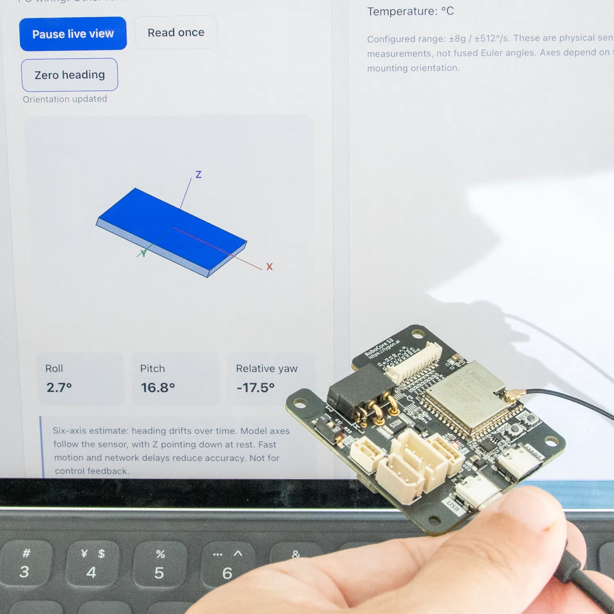
外设扩展
引出了 ESP32-S3 的剩余 IO 引脚、I2C、3V3、GND，可用于扩展其它外设。
RoboCore S3 套装二包含了 User Interface Module (A) 模块，集成了 OLED显示屏、五向开关按键和蜂鸣器，可以实现基础人机交互
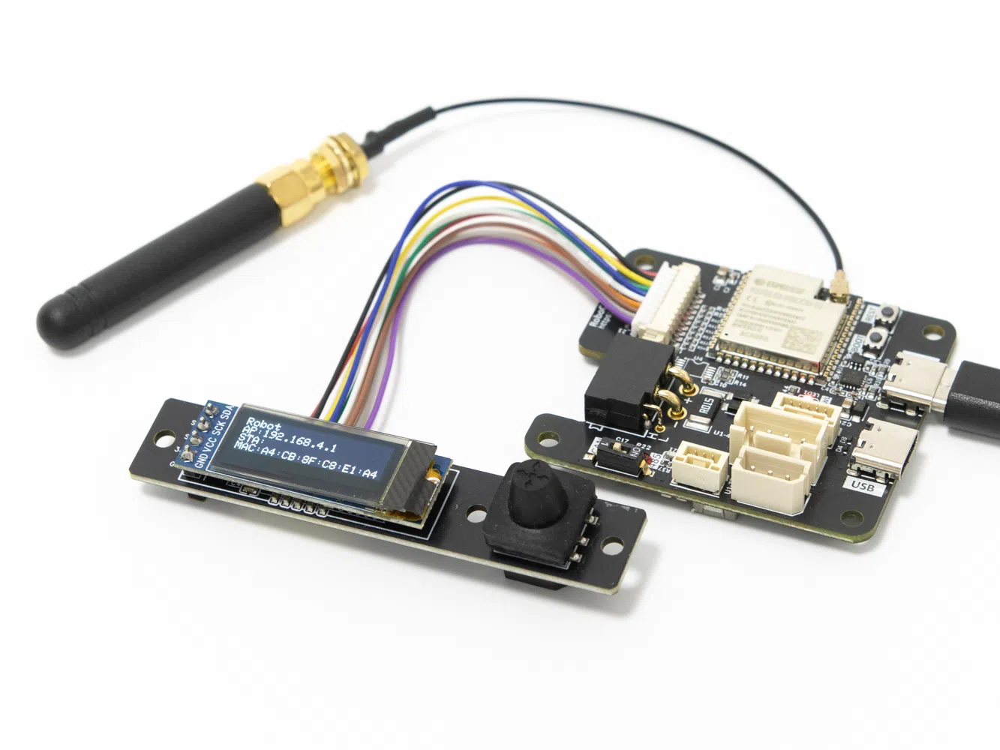
开源与教程
从主板上的各项独立功能，到电脑端的 JSON 通信：完整固件、Web 控制台、Arduino 工程与 Python 脚本，高效辅助用户实现各类机器人项目开发。
查看完整 PlatformIO 工程，结合 Wiki 的接线、依赖安装和使用步骤进行开发。
运行在 RoboCore S3 上
每个目录对应一个 .ino 工程，将复杂功能解耦为一个个独立的小单元。
扫描、控制与反馈
从有线通信到无线互联
传感器、显示与输入
Arduino 单元例程上传后会替换完整固件，我们提供下载工具和教程帮助用户轻松刷回出厂固件。
轻松搭建大小脑架构机器人
RoboCore S3 可以由另一台电脑/树莓派/Jetson等单板电脑来控制。
robocore/client.py本例程同时包含多种通信方式，通过人类可读的 JSON 格式的指令与 RoboCore S3 进行通信。
系统供电
除了 XT30 可以用于供电外，5264-3P（TTL 总线设备接口）和 XH2.54-4P（RS485 总线设备接口）也支持为 RoboCore S3 输入电源。
将电源接入 Hub 板，再用一根 5264-3P 连接线接到主板，就能同时实现供电与 TTL 通信。总线设备由 Hub 分配动力电，大电流无需经过 RoboCore S3。
输入电压须在 5–48V 内，并匹配 Hub 和所有共电设备的额定范围。
查看供电与接线说明 ↗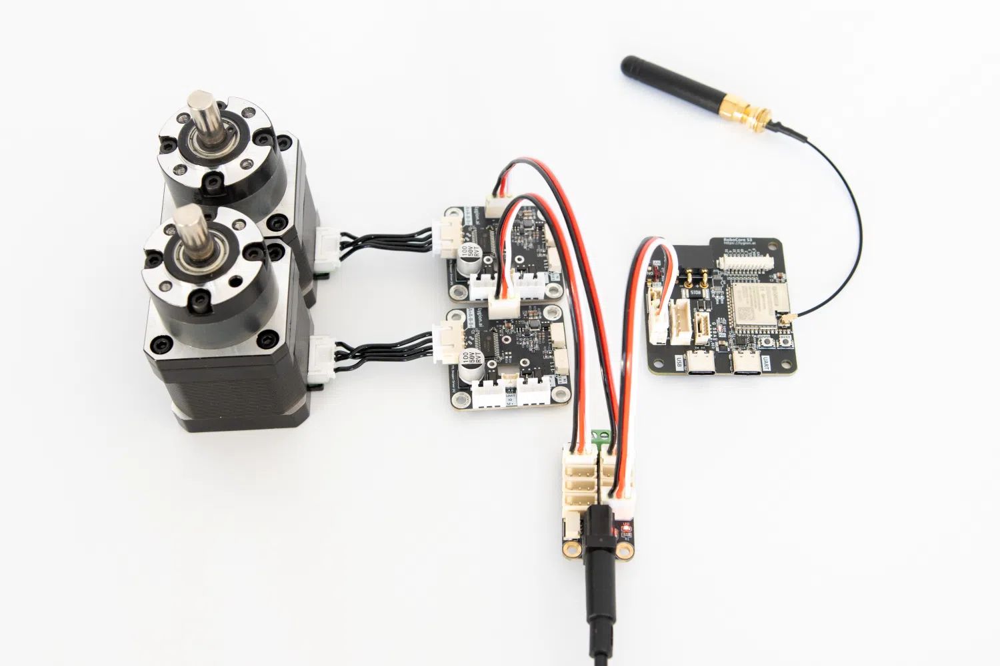
连接与使用
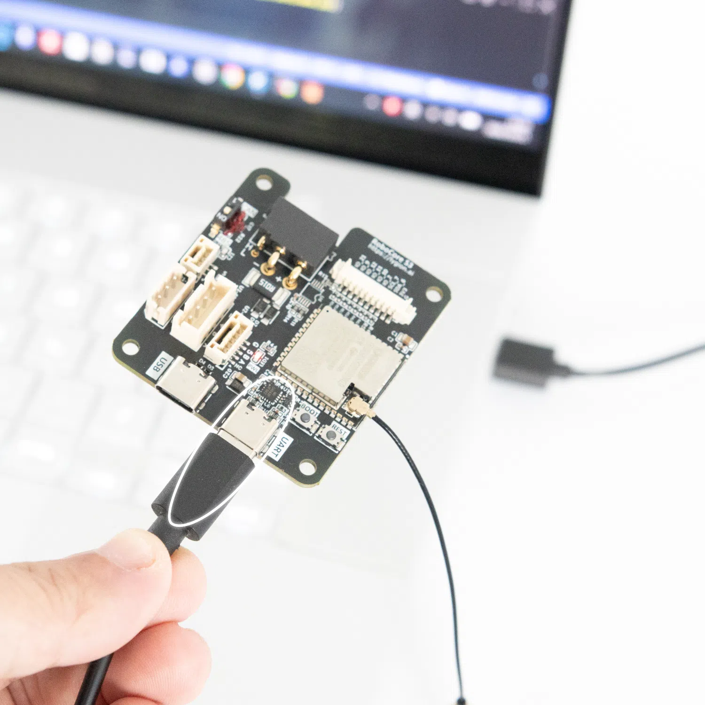
Type-C UART 接口包含自动下载电路。无需拆开机器人，连接一根 USB 数据线即可更新固件，无需手动操作 BOOT / RESET。
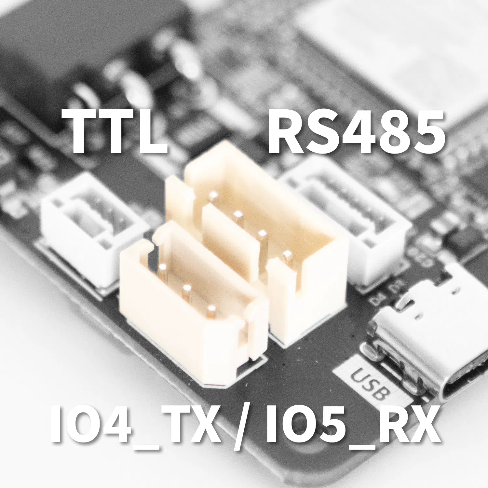
总线设备的 RS485（XH2.54-4P） 与 TTL（5264-3P） 共用一个 UART, 方便用户同时控制相同协议的总线产品（例如 STS、SMS 舵机混用），或借助 Lygion RS485-TTL Power Bridge 模块来实现控制远距离的总线设备。
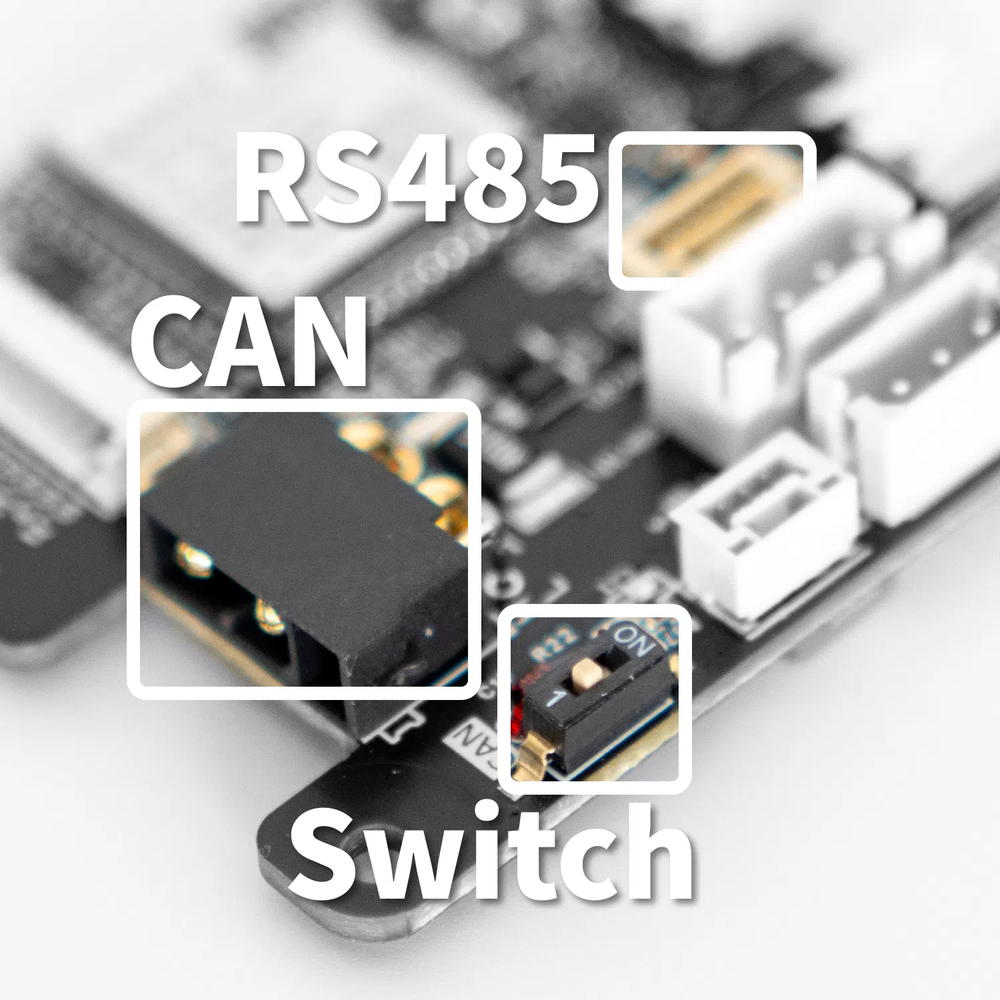
板载信号切换开关，用于切换 IO13/IO14 的功能：用于 RS485 通信（GH1.25-5P 接口，是独立于上述总线设备的 RS485 的另一路）或用于 CAN 总线（CAN 2+2 接口）通信。
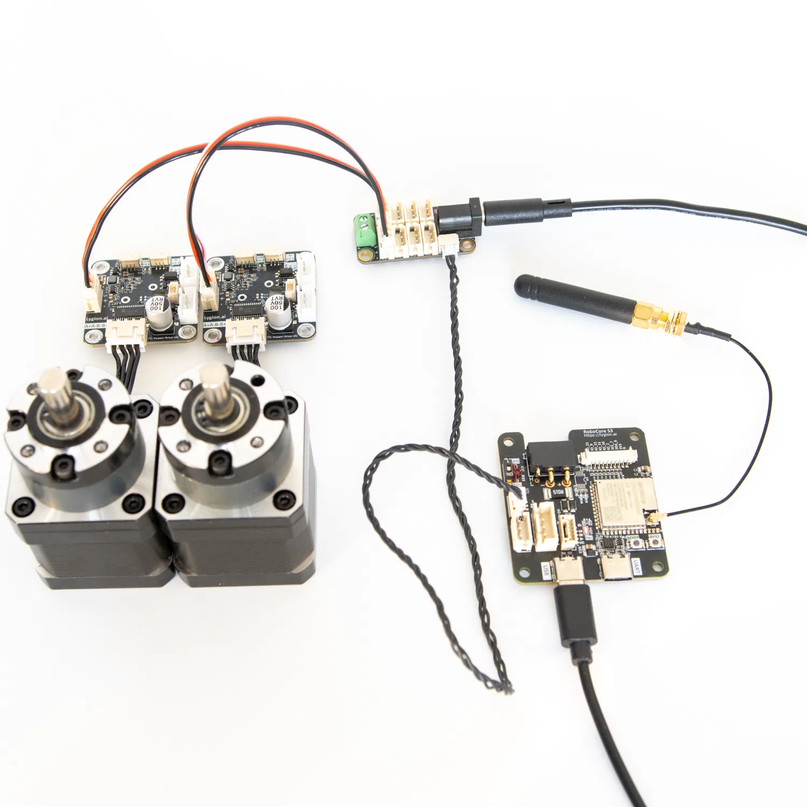
板间通信接口（GH1.25-3P）：此接口只用于 TTL 总线通信和共地，不传输动力电，对于功率比较大的场景，可以通过此接口连接到灵影总线 Hub 板对系统不同设备的供电进行解耦。
板载资源
编号对应功能表。观察方向：主板正面朝上，两个 Type-C 接口朝下。
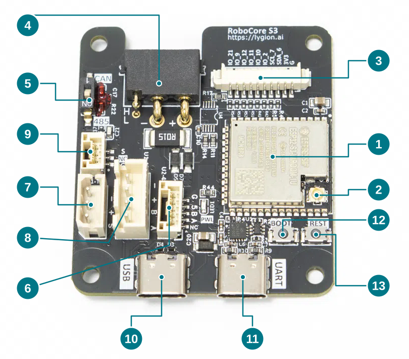
| 编号 | 接口 / 资源 | 功能与使用说明 |
|---|---|---|
| 01 | ESP32-S3 主控模组 | ESP32-S3-WROOM-1U-MCR8N8；8 MB Flash / 8 MB PSRAM，运行控制程序与无线通信。 |
| 02 | IPEX1 天线接口 | 连接 2.4GHz 外接天线；使用 Wi-Fi 或 ESP-NOW 前先接好天线。 |
| 03 | PH1.25-10P 扩展口 | 引出 GPIO、I²C、3.3V 与 GND，可连接 User Interface Module (A)。 |
| 04 | CAN 2+2 / XT30 电源端 | XT30 电源端输入 5–48V；信号端用于 CAN 通信，需将选择开关置于 CAN 档。 |
| 05 | CAN / RS485 选择开关 | 切换 IO13 RX / IO14 TX 的物理通路，CAN 与外部 RS485 二选一，程序需使用对应协议。 |
| 06 | GH1.25-5P 外部 RS485 | 独立于设备总线的 RS485 的另一路 RS485，使用时需将选择开关置于 485 档，使用 IO13 / IO14；含辅助 5V 输出，用于小功率外设（负载不超过 200mA）。 |
| 07 | 5264-3P 单线 TTL | 连接单线 TTL 总线设备，使用 IO4 TX / IO5 RX；电压与整版输入电压相同，持续输出上限 6A，也可以做为供电端口用于为系统供电。 |
| 08 | XH2.54-4P 设备 RS485 | 连接 RS485 总线设备，与单线 TTL 共用 UART1（IO4 / IO5）及波特率；电压与整板输入电压相同，持续输出上限 6A，也可以做为供电端口用于为系统供电。 |
| 09 | GH1.25-3P 板间 TTL | 用于板间 TTL 通信、共地与供电解耦，不提供动力供电。 |
| 10 | Type-C USB | ESP32-S3 原生 USB（IO19 / IO20），用于 USB CDC 上位机通信。 |
| 11 | Type-C UART | 经 USB 转串口连接 UART0，用于程序下载与串口调试，支持自动下载。 |
| 12 | BOOT 按键 | 连接 IO0，配合 RESET 可手动进入下载模式。 |
| 13 | RESET 按键 | 复位主控；按住时保持复位，松开后重启，不切断动力供电。 |
设备总线：编号 07、08 共用 UART1；总线设备接口不降压，也可作为供电输入；经 XT30 供电时，两路输出总负载及主板用电共同受其 10A 输入上限约束。
板载姿态传感器：QMI8658A 提供三轴加速度与三轴角速度，使用 IO6 / IO7，与外接 OLED 共用 I²C。OLED、五向按键与蜂鸣器位于外接 UI 模块。
基本参数
外形与安装尺寸
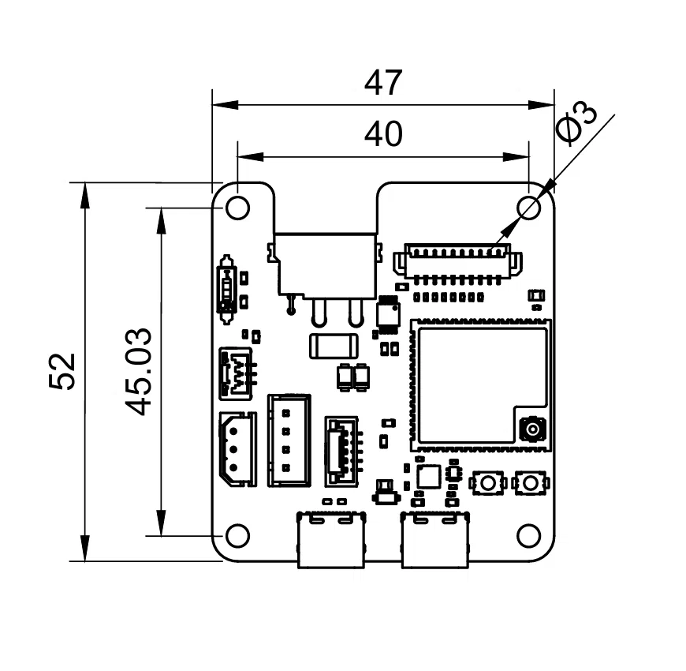
功耗为主板自身功耗，不包含总线设备与扩展外设。安装时使用四个装配孔，并预留插头、线缆和天线连接器空间。
套装选择
套装一
用浏览器或上位机控制，可独立做为机器人主控板使用。
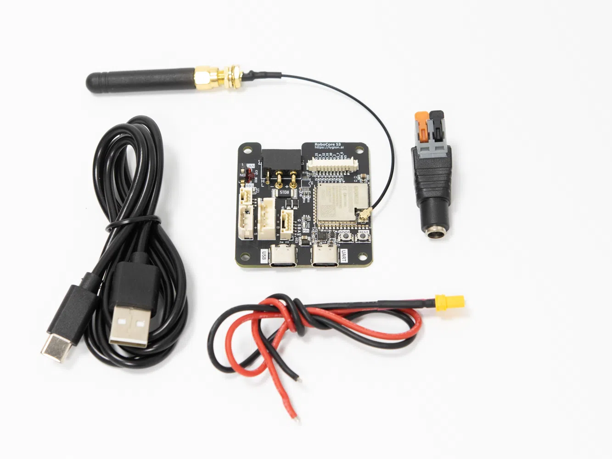
套装二
人机交互模块包含屏幕、按键与声音提示。
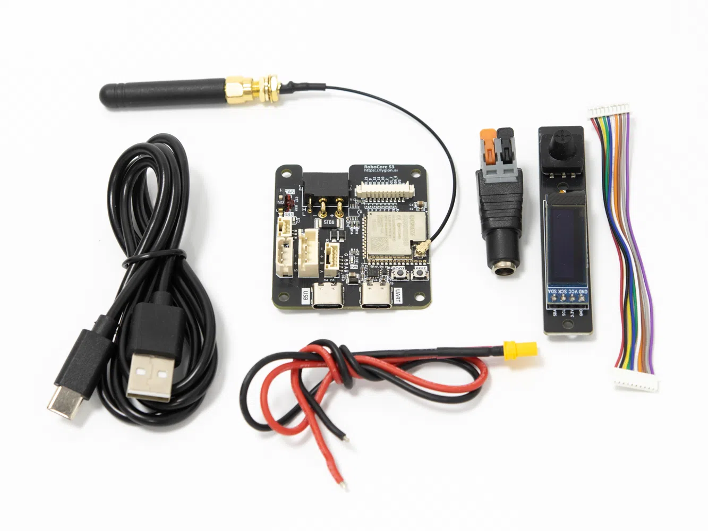
包含套装一全部物品，另附：
User Interface Module (A) 模块包含五向按键、0.91 寸 OLED 和蜂鸣器。
常见问题
可以从出厂内置的网页控制台开始，完成总线设备扫描、参数设置和反馈读取。机器人自主行为需要后续编程实现。
本产品主要与总线设备通信。普通步进电机需要相应步进驱动器，其他电机也需匹配的驱动方案；不能把动力总线接口当作裸电机相线输出。
可以通过 USB CDC 或网络通信 JSON 指令。例程简单，树莓派经 RoboCore S3 控制总线设备无需安装对应 SDK，易于二次开发。